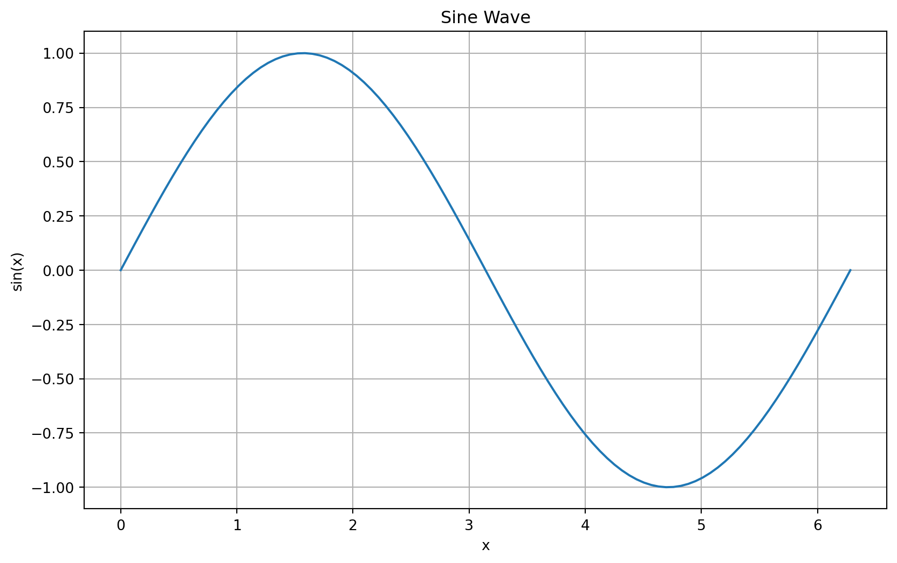

# Assignment to variables
a = 1
b = 2
# Print the variables
print(a)
print(b)1
2# Assignment to variables
a = 1
b = 2
# Print the variables
print(a)
print(b)1
2# In Python, the last expression in a cell is displayed automatically
a
b # Only this value will be displayed2a = 5
b = 1.5
c = 2.0
st = "hello"
print("Data type: ", type(a))
print("Data type: ", type(b))
print("Data type: ", type(c))
print("Data type: ", type(st))Data type: <class 'int'>
Data type: <class 'float'>
Data type: <class 'float'>
Data type: <class 'str'>a = 1
b = 2
# Addition
c = a + b
print(f"Addition: {a} + {b} = {c}")
# Subtraction
d = b - a
print(f"Subtraction: {b} - {a} = {d}")
# Multiplication
e = a * b
print(f"Multiplication: {a} * {b} = {e}")
# Division
f = a / b
print(f"Division: {a} / {b} = {f}")
# What happens when a = 1.0, b = 2.0?
a = 1.0
b = 2.0
print(f"With floats, {a} / {b} = {a / b}")Addition: 1 + 2 = 3
Subtraction: 2 - 1 = 1
Multiplication: 1 * 2 = 2
Division: 1 / 2 = 0.5
With floats, 1.0 / 2.0 = 0.5# Exponentiation
b = 2
c = b ** 3 # integer
d = b ** 3.0 # float
print(c)
print(d)8
8.0# Integer Division
a = 5
b = 2
print(f"Integer division: {a} // {b} = {a // b}")
# Modulo
mod_a_2 = a % 2
print(f"Modulo: {a} % {b} = {mod_a_2}")Integer division: 5 // 2 = 2
Modulo: 5 % 2 = 1t = True
f = False
# AND
res_and = t and f
print(f"{t} AND {f} = {res_and}")
# OR
res_or = t or f
print(f"{t} OR {f} = {res_or}")
# NOT
res_not = not t
print(f"NOT {t} = {res_not}")True AND False = False
True OR False = True
NOT True = Falsevariable_a = 5
variable_b = 10
# Equal
res_equal = variable_a == variable_b
print(f"{variable_a} == {variable_b}: {res_equal}")
# Not Equal
res_not_equal = variable_a != variable_b
print(f"{variable_a} != {variable_b}: {res_not_equal}")
# Greater Than
res_greater_than = variable_a > variable_b
print(f"{variable_a} > {variable_b}: {res_greater_than}")
# Less Than
res_less_than = variable_a < variable_b
print(f"{variable_a} < {variable_b}: {res_less_than}")
# Greater Than or Equal
res_greater_than_or_equal = variable_a >= variable_b
print(f"{variable_a} >= {variable_b}: {res_greater_than_or_equal}")
# Less Than or Equal
res_less_than_or_equal = variable_a <= variable_b
print(f"{variable_a} <= {variable_b}: {res_less_than_or_equal}")5 == 10: False
5 != 10: True
5 > 10: False
5 < 10: True
5 >= 10: False
5 <= 10: True# IF-ELSE
a = 1
b = 2
if a > b:
print("a is greater than b\n")
else:
print("b is greater than or equal to a\n")b is greater than or equal to a
# IF-ELIF-ELSE
a = 2
b = 2
if a > b:
print("a is greater than b")
elif a == b:
print("a is equal to b")
else:
print("a is less than b")a is equal to b# For loop with range
for i in range(1, 11): # range(1, 11) generates numbers from 1 to 10
print(i)1
2
3
4
5
6
7
8
9
10# While loop
i = 1
while i <= 5:
print(i)
i += 11
2
3
4
5# Loop with break
c = 1
while True:
print(c)
if c > 5:
print("End!")
break
else:
c += 11
2
3
4
5
6
End!# Python lists
my_list = [1, 2, 3, 4]
print(f"my_list = {my_list}")
print(f"Data type of my_list: {type(my_list)}")
# Accessing list elements
print(f"First element: {my_list[0]}")
print(f"Last element: {my_list[-1]}")my_list = [1, 2, 3, 4]
Data type of my_list: <class 'list'>
First element: 1
Last element: 4# NumPy arrays
import numpy as np
# Vector
b = np.array([1, 2])
print(f"b = {b}")
print(f"Data type of b: {type(b)}")
# Matrix
A = np.array([[1.5, 3.0], [6.7, 2.8]])
print(f"A = \n{A}")
print(f"Data type of A: {type(A)}")
# Vector inner product (dot product)
c = np.dot(b, b)
print(f"Inner product of b with itself: {c}")
# Matrix-vector multiplication
d = np.dot(A, b)
print(f"A・b using np.dot(): {d}")
# In NumPy, you can also use the @ operator for matrix-vector multiplication
d_alt = A @ b # '@' is the matrix multiplication operator in Python 3.5+
print(f"A・b using '@' operator: {d_alt}")
# Note: A * b (without @) would perform element-wise multiplication if b was the same shape as Ab = [1 2]
Data type of b: <class 'numpy.ndarray'>
A =
[[1.5 3. ]
[6.7 2.8]]
Data type of A: <class 'numpy.ndarray'>
Inner product of b with itself: 5
A・b using np.dot(): [ 7.5 12.3]
A・b using '@' operator: [ 7.5 12.3]import numpy as np
from numpy import linalg as LA
b = np.array([1, 2])
A = np.array([[1.5, 3.0], [6.7, 2.8]])
# Vector norms
print(f"L1-norm of b: {LA.norm(b, 1)}")
print(f"L2-norm of b: {LA.norm(b, 2)}")
print(f"L2-norm of b (default): {LA.norm(b)}")
print(f"L-infinity norm of b: {LA.norm(b, np.inf)}")
print("---")
# Matrix norms
print(f"Operator norm of A (induced by L2): {LA.norm(A, 2)}")
print(f"Frobenius norm of A: {LA.norm(A, 'fro')}")L1-norm of b: 3.0
L2-norm of b: 2.23606797749979
L2-norm of b (default): 2.23606797749979
L-infinity norm of b: 2.0
---
Operator norm of A (induced by L2): 7.729733772600305
Frobenius norm of A: 7.9987499023284885# Matrix-matrix multiplication
B = np.array([[1, 0], [0, 1]])
C = np.dot(A, B) # Using np.dot
print(f"Matrix multiplication A・B using np.dot():\n{C}")
C_alt = A @ B # Using @ operator
print(f"Matrix multiplication A・B using '@' operator:\n{C_alt}")Matrix multiplication A・B using np.dot():
[[1.5 3. ]
[6.7 2.8]]
Matrix multiplication A・B using '@' operator:
[[1.5 3. ]
[6.7 2.8]]# Element-wise multiplication
D = A * B # Element-wise multiplication
print(f"Element-wise multiplication A*B:\n{D}")
# Element-wise multiplication with the same matrix
E = A * A # Element-wise multiplication of a matrix with itself
print(f"Element-wise multiplication A*A:\n{E}")
# Element-wise multiplication with vector
b_squared = b * b # Element-wise multiplication of a vector with itself
print(f"Element-wise multiplication b*b: {b_squared}")
# Matrix multiplication with itself
AA = A @ A # Matrix multiplication of a matrix with itself
print(f"Matrix multiplication A@A:\n{AA}")Element-wise multiplication A*B:
[[1.5 0. ]
[0. 2.8]]
Element-wise multiplication A*A:
[[ 2.25 9. ]
[44.89 7.84]]
Element-wise multiplication b*b: [1 4]
Matrix multiplication A@A:
[[22.35 12.9 ]
[28.81 27.94]]# Solving linear system Ax = b
x = LA.solve(A, b)
print(f"Solution of Ax = b: {x}")
# Verify the solution
print(f"A・x = {np.dot(A, x)}")
print(f"A・x = {A @ x}") # Using @ operatorSolution of Ax = b: [0.20125786 0.2327044 ]
A・x = [1. 2.]
A・x = [1. 2.]# Definition of a function
def my_addition(a, b):
return a + b, a - bx = my_addition(1, 2)
print(f"Result: {x}")
print(f"First return value: {x[0]}")
print(f"Second return value: {x[1]}")
# You can also unpack the tuple directly
sum_result, diff_result = my_addition(5, 3)
print(f"Sum: {sum_result}, Difference: {diff_result}")Result: (3, -1)
First return value: 3
Second return value: -1
Sum: 8, Difference: 2import numpy as np
import matplotlib.pyplot as plt
x = np.linspace(0, 2*np.pi, 100) # 0から2πまでの100点
y = np.sin(x)
plt.figure(figsize=(10, 6))
plt.plot(x, y)
plt.title('Sine Wave')
plt.xlabel('x')
plt.ylabel('sin(x)')
plt.grid(True)
plt.show()
# List comprehensions
squares = [x**2 for x in range(1, 11)]
print(f"Squares of numbers 1-10: {squares}")
# Dictionaries
person = {
"name": "Alice",
"age": 25,
"city": "Tokyo"
}
print(f"Person dictionary: {person}")
print(f"Name: {person['name']}")
# String formatting
name = "Bob"
age = 30
message = f"{name} is {age} years old"
print(message)Squares of numbers 1-10: [1, 4, 9, 16, 25, 36, 49, 64, 81, 100]
Person dictionary: {'name': 'Alice', 'age': 25, 'city': 'Tokyo'}
Name: Alice
Bob is 30 years old